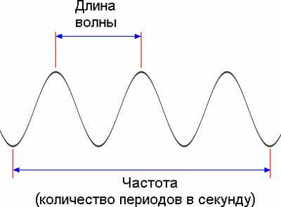
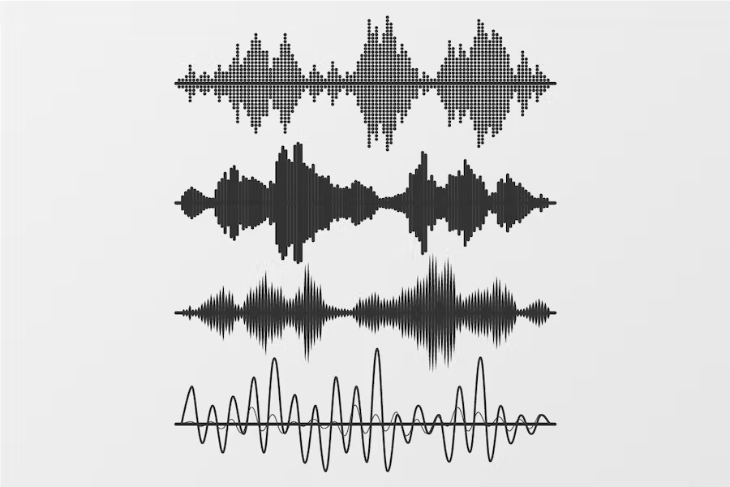

Звуковая волна
Звуковая волна представляет собой по сути последовательный
ряд уплотнений и разряжений среды (чаще всего воздушной
среды в обычных условиях) различной частоты. Природа
звуковых волн колебательная, вызываемая и производимая
вибрацией любых тел. Возникновение и распространение
классической звуковой волны возможно в трёх упругих средах:
газообразных, жидких и твёрдых. Поскольку звуковая волна
имеет колебательную природу, то у неё имеется такая
характеристика, как частота. Частота измеряется в герцах (в
честь немецкого физика Генриха Рудольфа Герца), и обозначает
количество колебаний за период времени, равный одной
секунде. Т.е. например, частота 20 Гц обозначает цикл в 20
колебаний за одну секунду. От частоты звука зависит и
субъективное понятие его высоты. Чем больше звуковых
колебаний совершается за секунду, тем «выше» кажется
звучание. Амплитуда или интенсивность звуковой волны —
это сила звука, которую органы слуха воспринимают как
громкость звукового сигнала. Для измерения громкости звука
используются фонометры, единицами ее измерения являются
децибелы У звуковой волны так же имеется ещё одна важнейшая
характеристика, имеющая название длина волны. Длиной волны
принято считать расстояние, которое проходит звук
определённой частоты за период, равный одной секунде.


Сигналы
Цифровой сигнал — сигнал, который можно представить в виде
последовательности дискретных (цифровых) значений. В наше
время наиболее распространены двоичные цифровые сигналы
(битовый поток) в связи с простотой кодирования и
используемостью в двоичной электронике. Для передачи
цифрового сигнала по аналоговым каналам (например,
электрическим или радиоканалам) используются различные виды
манипуляции (модуляции). Аналоговый сигнал — сигнал данных,
у которого каждый из представленных параметров описывается
функцией времени и непрерывным множеством возможных значений
Амплитудно-частотная характеристика (АЧХ)
Поскольку на практике практически не встречаются волны одной
частоты, то возникает необходимость разложения всего
звукового спектра слышимого диапазона на обертоны или
гармоники. Для этих целей существуют графики, которые
отображают зависимость относительной энергии звуковых
колебаний от частоты. Такой график называется графиком
частотного спектра звука. Частотный спектр звука бывает двух
типов: дискретный и непрерывный. Дискретный график спектра
отображает частоты по отдельности, разделённые пустыми
промежутками. В непрерывном спектре присутствуют сразу все
звуковые частоты. В случае с музыкой или акустикой чаще
всего используется обычный график Амплитудно-Частотой
Характеристики (сокращённо АЧХ). На таком графике
представлена зависимость амплитуды звуковых колебаний от
частоты на протяжении всего спектра частот. Глядя на такой
график легко понять, например, сильные или слабые стороны
конкретного динамика или акустической системы в целом,
наиболее сильные участки энергетической отдачи, частотные
спады и подъёмы, затухания, а так же проследить крутизну
спада.
Осциллятор
В классическом синтезаторе звук генерируется осцилляторами
(VCO — voltage-controlled oscillator). Это устройства,
непрерывно генерирующие периодические колебания определенной
формы: синусоидальные, квадратные, треугольные,
пилообразные.
Инструменты для редактирования и изучения музыки
Инструмент для обрезки аудиозаписи
Очень часто при написании электронной музыки приходится обрезать
аудиозапись, а также это может потребоваться и в других сферах
Перейти
Инструмент для определения BPM (Темпа)
Определение темпа очень важно при определении жанра трека, а
также при написании ремикса на определенную аудиозапись
Перейти
Инструмент для добавления эффектов
Аудио эффекты используются практически в каждом, если не в
каждом аудиозаписи. Они окружают нас и в реальной жизни
Перейти